") , i = 1,2,...n, に対して、( X は独立変数、Y は従属変数) 次の形式のモデルを使ってデータに多項式回帰を実行します。
, i = 1,2,...n, に対して、( X は独立変数、Y は従属変数) 次の形式のモデルを使ってデータに多項式回帰を実行します。
与えられたデータセット , i = 1,2,...n, に対して、( X は独立変数、Y は従属変数) 次の形式のモデルを使ってデータに多項式回帰を実行します。

|
(1) |
|---|
ここで、 k は多項式の次数です。Originでは、kは10より小さい正の数です。 パラメータは重み付けした最小二乗法を使って推定されます。 この方法は、独立変数の範囲内で理論曲線と測定データポイント間の差の二乗和を最小化します。フィットの後、仮説検定と残差のプロットを使ってモデルを評価できます。
 はy切片で、パラメータ
はy切片で、パラメータ
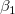
, , ...,
, ...,  は、部分係数(部分勾配)です。
行列形式で記述することができます。
は、部分係数(部分勾配)です。
行列形式で記述することができます。

|
(2) |
|---|
および、
|
|
 は、
は、 かつ
かつ![Var[E]=\sigma^2](../images/Polynomial_Regression_Results/math-5d3cf3883ed3c4d0b917f9fc2e8f776b.png "Var[E]=\sigma^2") における正規確率変数として、独立かつ一様に分布していると仮定します。
における正規確率変数として、独立かつ一様に分布していると仮定します。
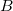
について、 を最小にするには、次の関数を使います。
を最小にするには、次の関数を使います。
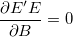 |
(3) |
|---|
結果 は、ベクターデータ Bの最小二乗推定値値は、線形方程式の解で、次の様に表すことができます。
は、ベクターデータ Bの最小二乗推定値値は、線形方程式の解で、次の様に表すことができます。
^{-1}X^{\prime }Y")
|
(4) |
|---|
ここで、X'は、Xの転置で、与えられたXに対するYの推定値は次のようになります。
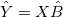 |
(5) |
|---|
(4)に
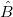
を置換して、行列 を定義することができます。
を定義することができます。
![\hat{Y}=[X(X'X)^{-1}X']Y=PY](../images/Polynomial_Regression_Results/math-9a8d7df1113cf6e1902177ad13919636.png "\hat{Y}=[X(X'X)^{-1}X']Y=PY")
|
(6) |
|---|
残差は次のように定義されます。

|
(7) |
|---|
残差平方和は、次の通りです。

|
(8) |
|---|
| Note:より高い次数の多項式が従属変数に対して最も効果的であることに注目すべきです。そのため、高次の項（4を超える）を持つモデルは、係数値の精度に非常に敏感であり、係数値のわずかな違いが、計算されたy値に大きな違いをもたらす可能性があります。これに言及するのは、デフォルトでは、多項式フィッティングの結果が小数点以下5桁に丸められるためです。これらの出力されたワークシートの値を手動でフィット曲線に戻すと、丸めで発生するわずかな精度の低下が、高次の項に大きい影響を及ぼし、モデルが間違っていると誤った結論を付ける可能性があります。 最適なパラメータ推定値を使用して手動計算を実行する場合は、丸められた値ではなく、完全精度の値を使用してください。 Originが取得した値を小数点以下5桁（またはその他）に丸める場合、これらの値は表示上のみです。特に指定がない場合は、常に、数値計算では完全精度（(double(8))を使用します。 詳細は、Originヘルプファイルの 数値の扱いについてをご覧ください。
一般的に、任意の連続関数を高次の多項式モデルにフィットさせることができます。 ただし、より高次の項にはあまり実用的な意味はありません。 |
上記のセクションでは、誤差に定数分散があると仮定しています。しかし、実験値をフィッティングする場合、（計測器の確度と精度に影響を及ぼす、）機器誤差を考慮する必要があります。したがって、誤差の定数分散推定は、棄却されます。を非定数分散の正規分布であると推定する必要があります。また、誤差は、 のようになり、フィッティングで重みとして使用することができます。重みは、次のように定義されます。
のようになり、フィッティングで重みとして使用することができます。重みは、次のように定義されます。

|
|---|
フィッティングモデルは、次の式になります。
![\sum_{i=1}^n w_i (y_i-\hat y_i)^2=\sum_{i=1}^n w_i [y_i-(\hat{\beta _0}+\hat{\beta _1}x_i)]^2](../images/Polynomial_Regression_Results/math-b91af30efe2f541053551a9080cdf9de.png "\sum_{i=1}^n w_i (y_i-\hat y_i)^2=\sum_{i=1}^n w_i [y_i-(\hat{\beta _0}+\hat{\beta _1}x_i)]^2")
|
(9) |
|---|
重み因子 は、3つの式によって与えられます。
は、3つの式によって与えられます。
エラーバーは、計算では重みとして取り扱われません。

|
(10) |
|---|
機械的重みとして、値は、機械的誤差に反比例します。大きな誤差がある場合よりも正確であるため、小さな誤差の試行には、大きな重みがあります。

|
(11) |
|---|
| 重みとしての誤差は、ワークシートの「YError」として構築されています。 |
固定切片は、y切片 を設定して、値を固定します。また、 固定切片のため、全ての自由度は、n*=n-1となります。
を設定して、値を固定します。また、 固定切片のため、全ての自由度は、n*=n-1となります。
sqrt(補正カイ二乗値)のスケールエラーは、重みを付けたフィットで、使用することができます。このオプションは、フィット処理で出力されるパラメータの誤差だけに影響し、フィット処理やデータには影響しません。
デフォルトで、これにはチェックが入っており、 の分散は、 パラメータ誤差の計算を考慮しているか、 あるいは、分散は、誤差計算を考慮していません。
共分散行列を例に挙げます。
の分散は、 パラメータ誤差の計算を考慮しているか、 あるいは、分散は、誤差計算を考慮していません。
共分散行列を例に挙げます。
sqrt(補正カイ二乗値)のスケールエラー
=\sigma^2 (X^{\prime }X)^{-1}")
|
(12) |
|---|---|

|
sqrt(補正カイ二乗値)のスケールエラーでは無い
=(X'X)^{-1}\,\!")
|
(13) |
|---|
重み付けフィットには、^{-1}\,\!") の代わりに、
の代わりに、^{-1}\,\!") を使います。
を使います。
式(4)
各パラメータにおいて、標準誤差は以下のように得られます。
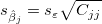 |
(14) |
|---|
ここで、 は、j番目の
は、j番目の^{-1}") の対角要素です。（
の対角要素です。（^{-1}") は、重み付けフィットに使われます。）
は、重み付けフィットに使われます。） は、次式で計算される残差標準偏差です。 (「std dev」、「推定の標準誤差」、「root MSE」のようにも呼びます。)
は、次式で計算される残差標準偏差です。 (「std dev」、「推定の標準誤差」、「root MSE」のようにも呼びます。)

|
(15) |
|---|
は、 の分散である の推定です。
の推定です。
| Note:自由度(df)、 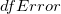 についての詳細は、ANOVA 表をご覧ください。 |
回帰の仮定が成り立つ場合、帰無仮説と対立仮説を使用して回帰係数のt検定を実行できます。
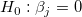

t値は、次の式で計算できます。
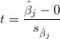 |
(16) |
|---|
計算されたt値を使って、対応する帰無仮説を棄却するかどうかを決めることができます。通常、与えられたパラメータの信頼水準 について、
について、
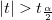
のときは、 を棄却できます。さらに、 p-値は より小さくなります。
を棄却できます。さらに、 p-値は より小さくなります。
t 検定の  が真である確率
が真である確率
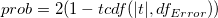 |
(17) |
|---|
ここで、") は、 |t|値におけるスチューデントt 分布の累積分布関数を、誤差の自由度
は、 |t|値におけるスチューデントt 分布の累積分布関数を、誤差の自由度
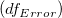
で計算します。t値から各パラメータの \times 100\%") 信頼区間を次式で計算することができます。
信頼区間を次式で計算することができます。
}\varepsilon _{\hat \beta _j}\leq \hat \beta _j\leq \hat \beta _j+t_{(\frac \alpha 2,n^{*}-k)}\varepsilon _{\hat \beta _j}")
|
(18) |
|---|
ここで と
と
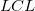
は、それぞれ上側信頼区間と下側信頼区間のことです。信頼区間の半値幅は以下の通りです。
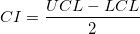 |
(19) |
|---|
いくつかのフィット統計式をここに要約します。

（誤差）の変数に対する自由度。詳細は ANOVA表を参照してください。
|
|
(20) |
|---|
残差平方和。式(8)を参照。
フィットの良さは、 決定係数(COD)  で評価でき、次の式になります。
で評価でき、次の式になります。
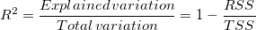 |
(21) |
|---|
補正 は、自由度の 値を調整するのに使用されます。これは次式のように計算されます。

|
(22) |
|---|
相関係数 R値は、 の平方根を使って計算できます。

|
(23) |
|---|
誤差の平均平方の平方根または、残差標準偏差は、次式に等しくなります。

|
(24) |
|---|
RSSの平方根に等しい。

|
(25) |
|---|
多項式フィットのANOVA表は
| df | 平方和 | 平均平方 | F値 | Prob > F | |
|---|---|---|---|---|---|
| モデル | k | 
|

|

|
p-値 |
| 誤差 | n* - k | 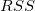 |
")
|
||
| 合計 | n* | 
|
| Note: 切片がモデルに含まれてる場合、 n*=n-1 です。それ以外は、 n*=n で平方和の合計は未補正となります。 |
ここで、平方和の合計TSSは、
^2") (補正) (補正)
|
(26) |
|---|---|
 (未補正) (未補正)
|
(27) |
F値で、フィットモデルがモデル「y=一定」と、有意に異なるかどうかを検定します。
また、p値、または、有意水準は、F検定と一緒に出力されます。p値が、フィットモデルがモデル「y=一定」と有意に異なっていることを意味するよりも小さい場合、帰無仮説を棄却できます。
ある値に切片を固定している場合、F検定のp値には意味が無く、切片一定としない線形多重回帰とは異なります。
不適合度を実行するには、連結フィットモードが選択されている場合に、少なくともX値がデータセット内や複数データセット内で反復できるように、反復観測、つまり、「複製データ」が必要になります。
複製データでフィットに使われている表記：
 は、データセット中のi番目のx値における、j番目の観測値です。 は、データセット中のi番目のx値における、j番目の観測値です。 |
 は、i番目のx値における全てのy値の平均です。 は、i番目のx値における全てのy値の平均です。 |
 は、i番目のx値における、j番目の観測値の予測反応です。 は、i番目のx値における、j番目の観測値の予測反応です。 |
残差平方和は、次の通りです。
^2")
|
|---|
^2")
|
^2")
|
非線形フィッティングの適合度検定表：
| DF | 平方和 | 平均平方 | F値 | Prob > F | |
|---|---|---|---|---|---|
| 不適合度 | c-k-1 | LFSS | MSLF = LFSS / (c - k - 1) | MSLF / MSPE | p-値 |
| 純誤差 | n - c | PESS | MSPE = PESS / (n - c) | ||
| 誤差 | n*-k | RSS |
| Note: 切片がモデルに含まれてる場合、 n*=n-1 です。それ以外は、 n*=n で平方和の合計は未補正となります。勾配が固定の場合、 cは、明確なx値の数を示します。切片が固定である場合、適合度検定のDFは、c-kになります。 |
多重線形回帰の共分散行列は以下によって計算されます。
=\sigma ^2(X^{\prime }X)^{-1}")
|
(28) |
|---|
特に、単一線形回帰の共分散行列は以下によって計算されます。
 & Cov(\beta _0,\beta _1)\\
Cov(\beta _1,\beta _0) & Cov(\beta _1,\beta _1)
\end{pmatrix}=\sigma ^2\frac 1{SXX}\begin{pmatrix} \sum \frac{x_i^2}n & -\bar x \\-\bar x & 1 \end{pmatrix}")
|
(29) |
|---|
2つのパラメータ間の相関は、
=\frac{Cov(\beta _i,\beta _j)}{\sqrt{Cov(\beta _i,\beta _i)}\sqrt{Cov(\beta _j,\beta _j)}}")
|
(30) |
|---|
フィット関数の信頼区間は、フィット関数の値の推定値が独立変数の特定の値でどれほど良いかを示します。フィット関数の正確な値が信頼区間に含まれるように、100 %で指定することができます。ここで、 は指定した信頼水準です。フィット関数に対して、この定義済みの信頼区間は、以下の式で計算できます。
%で指定することができます。ここで、 は指定した信頼水準です。フィット関数に対して、この定義済みの信頼区間は、以下の式で計算できます。
![\hat{Y}\pm t_{(\alpha/2,dof)}{\left [\chi^2\mathbf{x}\mathbf{C}\mathbf{x}' \right ]}^{\frac{1}{2}}](../images/Polynomial_Regression_Results/math-a2cba3c7fb1add639804a63591d529b5.png "\hat{Y}\pm t_{(\alpha/2,dof)}{\left [\chi^2\mathbf{x}\mathbf{C}\mathbf{x}' \right ]}^{\frac{1}{2}}")
|
(31) |
|---|
ここで
![\mathbf{x}=\left [ \frac{\partial y}{\partial \beta_0},\frac{\partial y}{\partial \beta_1},\frac{\partial y}{\partial \beta_2},...,\frac{\partial y}{\partial \beta_k} \right ]](../images/Polynomial_Regression_Results/math-5a5d1b301c0a94216119e6e490f4e688.png "\mathbf{x}=\left [ \frac{\partial y}{\partial \beta_0},\frac{\partial y}{\partial \beta_1},\frac{\partial y}{\partial \beta_2},...,\frac{\partial y}{\partial \beta_k} \right ]")
|
(32) |
|---|
そして、 C は共分散行列です。
指定した有意水準αに対する推定帯は、特定の独立変数の値で、一連の繰り返し実験によるすべての測定データの100%がその範囲に含まれるような区間です。フィット関数に対して、この定義済みの推定区間は、以下の式で計算できます。
![\hat{Y}\pm t_{(\alpha/2,dof)}{\left [\chi^2(1+\mathbf{x}\mathbf{C}\mathbf{x}') \right ]}^{\frac{1}{2}}](../images/Polynomial_Regression_Results/math-9548b3e4b4bf2ff2b5c83da6ed6ca8b5.png "\hat{Y}\pm t_{(\alpha/2,dof)}{\left [\chi^2(1+\mathbf{x}\mathbf{C}\mathbf{x}') \right ]}^{\frac{1}{2}}")
|
(33) |
|---|
作図するには、標準、正規化、スチューデント化、スチューデント化残差から1つの残差タイプを選択します。
残差散布図 vs.独立変数
vs.独立変数 では、それぞれのプロットは別のグラフに配置されます。
では、それぞれのプロットは別のグラフに配置されます。
残差散布図 vs. フィット結果
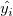
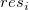
vs. 順番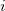
残差のヒストグラム
残差 vs. ラグ残差}")
残差の正規確率プロットは、分散が正規分布しているかどうかを調べるのに使用します。結果のプロットはおおよそ線形で、誤差範囲は正規分布していると仮定することができます。プロットはパーセンタイル対順序化された残差をベースにしており、パーセンタイルは次のように仮定されます。
}{(n+\frac{1}{4})}")
ここで、n はデータセットの合計数で、i はi 番目のデータです。なお、正規確率プロットとQ-Qプロットについてをご覧ください。
 ,
,

 ,
,

 = 0です。
= 0です。